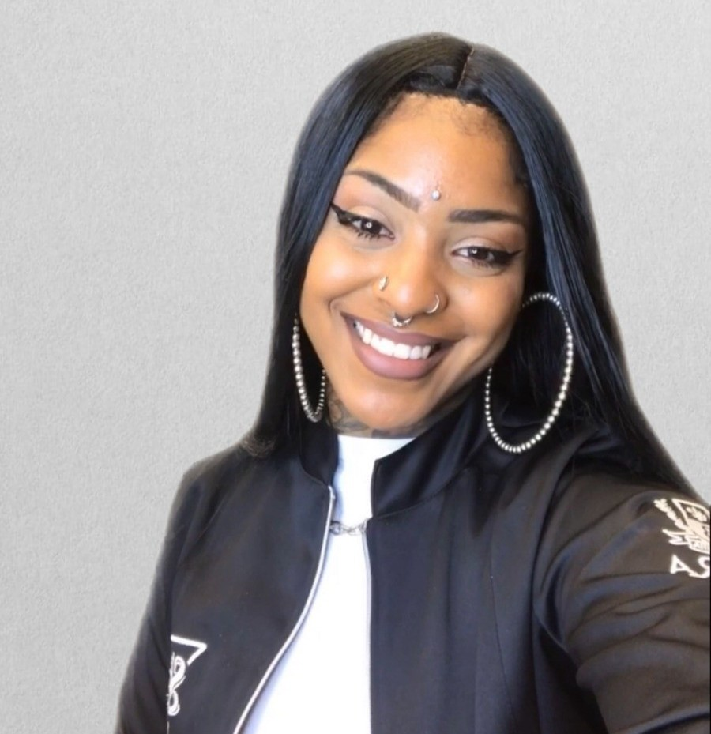

|  |
Técnica Administrativa | Aluna de Análise e Desenvolvimento de Sistemas da Faculdade SENAC PE Endereço: Jardim São Paulo, Recife - PE. Idade: 28 anos. Telefone: (81)9 9746-5834 E-mail: mairalourenco.dev@gmail.com Portifólio | GitHub | Linkedin |
Incluir informações sobre a minha trajetória!!!!!
Estudante de Análise e Desenvolvimento de Sistemas em transição de carreira, buscando oportunidades de estágio para aplicar e expandir minhas habilidades técnicas e analíticas. Motivada por desafios, apaixonada por tecnologia e por processos criativos, busco contribuir para projetos inovadores e adquirir experiência prática na área de desenvolvimento de software. Determinada a agregar valor à equipe com a minha capacidade de resolução de problemas, aprendizado rápido e colaboração.
| Período | Cargo | Instituição | Descrição |
|---|---|---|---|
| 2017 - Até o momento | Empreendedora | Maíra Lourenço Hands.Art | Responsável por toda parte criativa do empreendimento - Social mídia, designer |
| Ago/2023 - Nov/2023 | Assistente Administrativo | Clínica Médica Espaço Varizes | Responsável pela organização do cronograma dos médicos, agendamentos e resgate de pacientes(financeiro) |
| Fev/2011 - Jul/2013 | Auxiliar Administrativo | CHESF - Companhia Hidrelétrica do São Francisco | Organização e arquivamento de documentos, preenchimento de formulários e planilhas, verificação de entrada e saída de correspondências, e auxiliar outros profissionais do time em atividades propostas. |
| Soft Skills | Hard Skills |
|---|---|
| Proativa e Criativa | HTML | CSS | JavaScript |
| Organizada | Figma |
| Resiliência e Inteligência emocional | Excel |
| Liderança | Git | GitHub |
| Resolução de problemas e Adaptabilidade | Banco de Dados(SQL) |
| Comunicação | Inglês intermediário |
| Relacionamento interpessoal e trabalho em equipe | Designer |